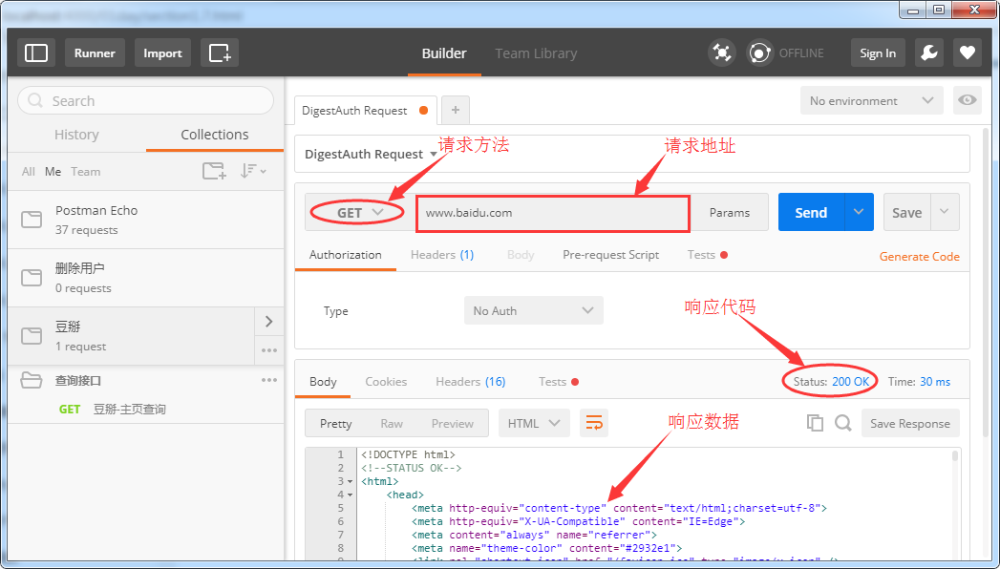
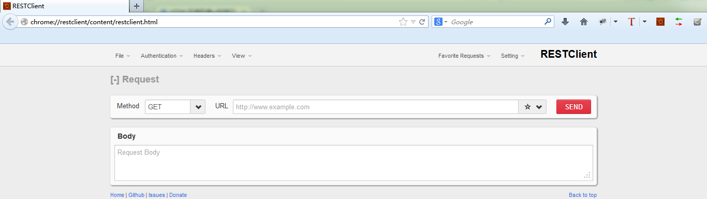

常用接口测试插件工具
目标
- 熟悉并了解开发常用接口测试插件
- 快速掌握离线及在线安装插件方式
- 体验接口测试
接口测试工具：
- Postman
- RestClient
- Jmeter
1. Postman
: 是google开发的一款功能强大的网页调试与发送网页HTTP请求，并能运行测试用例的的Chrome插件

1.1 安装环境
- 安装-谷歌浏览器(65.0.3311.4_chrome)
- 安装-Postman插件(Postman_v4.1.3.zip)
- 安装方式(离线/在线)
1.2 Postman安装步骤
- 1). 安装谷歌浏览器
- 2). 打开浏览器扩展页面
- chrome://extensions/
- 自定义及控制->更多工具->程序扩展
- 3). 勾选开发者模式
- 4). 加载已解压的扩展程序
1.3 Postman演示
- 请求方法（GET）:详情请见接口架构风格讲解
- 请求URL：http://www.sojson.com/open/api/weather/json.shtml?city=北京
1.4 结果
- 查看响应状态码
- 查看响应数据
2. RESTClient
: FirefoxRESTClient的插件，这款插件由国人开发，功能上支持于返回的数据高亮显示

2.1 安装环境
- 浏览器(火狐35.0)
- 接口插件工具(RESTClient 2.0.5)
- 安装方式(在线)
2.2 RESTClient安装步骤
- 1). 安装火狐浏览器
- 2). 打开浏览器-附加组件
- about:addons
- Ctrl+Shift+A
- 工具菜单->附加组件
- 3). 搜索RESTClinet 2.0.5
- 4). 安装
2.3 RESTClient演示
- 请求方法（GET）
- 请求URL：http://www.weather.com.cn/data/sk/101010100.html
2.4 结果
- 查看响应状态码
- 查看响应数据
2.5 JSON科普
概念：是一种轻量级的数据交换格式。
语法 : JSON由已键/值对组合方式，
{
"name":"张三",
"age":18,
}
{
"brand":"奔驰",
"price":"50万"
}
总结
- 接口
- 接口测试
- Postman插件
- RESTClient插件
思考-接口的组成?
http://www.weather.com.cn/data/sk/101010100.html
http://127.0.0.1:8000/api/departments/
http://127.0.0.1:8000/api/departments/T02/
http://127.0.0.1:8000/api/departments/?$dep_id_list=T01,T02,T03